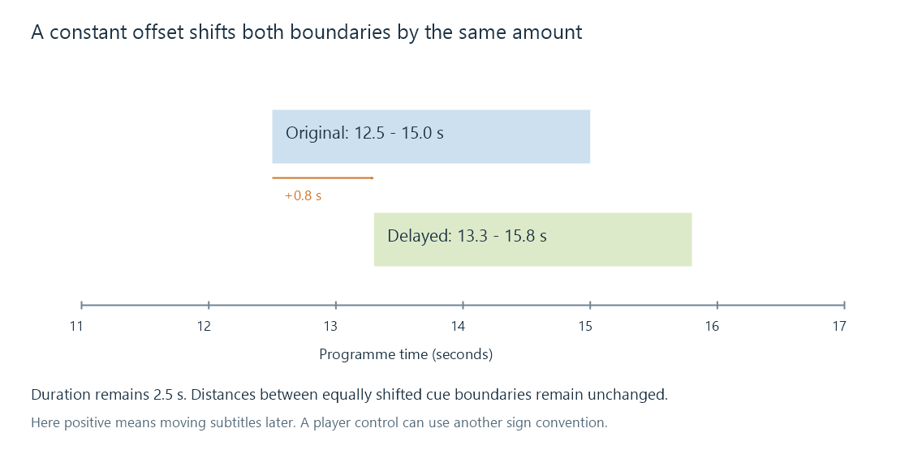

Subtitle time offsets
A subtitle time offset moves all applicable cue boundaries by the same amount without changing the cue durations or spacing.
A time offset shifts a subtitle sequence earlier or later by a constant amount. It is the appropriate kind of correction when the same subtitle track is consistently displaced relative to its matching programme.
Suppose a line begins at 12.5 seconds, but the corresponding speech begins at 13.3. The subtitle is early by 0.8 seconds. It needs to move later.
Define the sign through the result
Here, a positive offset means delay the subtitle:
new start = old start + offset
new end = old end + offset
A cue from 12.5 to 15.0 seconds with +0.8 becomes 13.3 to 15.8.

| Property | Before | After +0.8 s |
|---|---|---|
| Start | 12.5 s | 13.3 s |
| End | 15.0 s | 15.8 s |
| Duration | 2.5 s | 2.5 s |
| Gap to any equally shifted following cue | Unchanged | Unchanged |
If the subtitle is late, it needs a negative correction under this convention. Interfaces can describe the control as subtitle delay, audio-relative adjustment or another sign convention. Confirm which action moves the displayed line in the intended direction instead of assuming the plus sign has one universal UI meaning.
A fixed shift preserves the sequence's time scale
The distance between any two cue boundaries remains the same. The slope of the timeline is unchanged. An offset therefore cannot correct a sequence that is synchronized near the opening and progressively farther out later.
Test the same recognizable speech at several positions. If +0.8 works near the opening, middle and end, a constant displacement is a plausible model. If later passages need +3 or +8 seconds instead, examine timing drift or edition differences.
Cues can cross the playable boundary
Consider a cue from 0.4 to 1.4 seconds moved earlier by 0.8. Its mathematical interval becomes −0.4 to 0.6 seconds.
A playback timeline beginning at zero can present only the portion from 0 to 0.6. A file format that does not permit negative standalone timestamps needs a deliberate clipping or omission policy when saving the result. Clamping both times without checking the interval can create an empty cue if the entire event has moved before zero.
There is no reason to wrap a negative result around to an enormous positive time as if it were a time-of-day clock.
A playback control and a file edit have different scope
An app can apply a viewing offset without rewriting the subtitle file. An editor can instead save shifted cue times into a new file. Applying both adds their effects: a saved +0.8 correction and another playback +0.8 produce +1.6 seconds.
For an Emby comparison, identify whether the selected track has edited timestamps and whether the app has a session offset. A setting that belongs to one viewing route need not describe a changed file on the server.